Lab 6 - Building advanced dashboard
Lab Goal
To build out your first basic dashboard, extending it with more components until you have an advanced dashboard with extensive metrics examples.
Advanced dashboard - Starting point
This workshop builds on the work you did on the last lab, so your starting dashboard should
look like this (see next slide to jump to this point):

Intermezzo - Jumping to the starting point
If you have not completed the previous labs and just want to upload a fully completed dashboard,
just apply the file
support/dashboard-lab5.json found in the
Perses Easy Install project.
. It's a resource defining a dashboard as worked out in previous labs and can be applied as
follows:
$ ./support/bin/percli apply -f support/dashboard-lab5.json
object "Dashboard" "MyFirstDashboard"
has been applied in the
project "workshopproject"
Intermezzo - Evaluating the end results
If you want to just upload a fully completed lab result (basically cheating!) to see what the
final dashboard looks like without completing the lab work, just apply the file
support/dashboard-lab6.json found in the
Perses Easy Install project.
. It's a resource defining a dashboard as worked out in this lab and can be applied as
follows:
$ ./support/bin/percli apply -f support/dashboard-lab6.json
object "Dashboard" "MyFirstDashboard"
has been applied in the
project "workshopproject"
Advanced dashboard - Creating total memory gauge
You've previously created a stat chart from scratch, so now let's create two
Gauge Chart panels for each of the two previous memory stat chart queries
and add them to your layout in the same grid row. The first will be a total memory gauge such
as this:
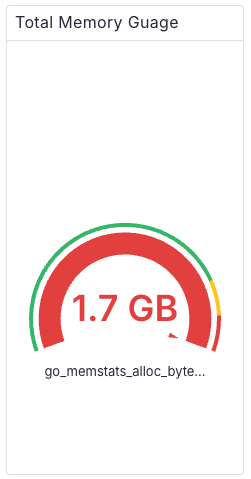
Advanced dashboard - Adding total memory gauge
To add a new panel as before, start by opening the dashboard for editing with
EDIT button in top right:
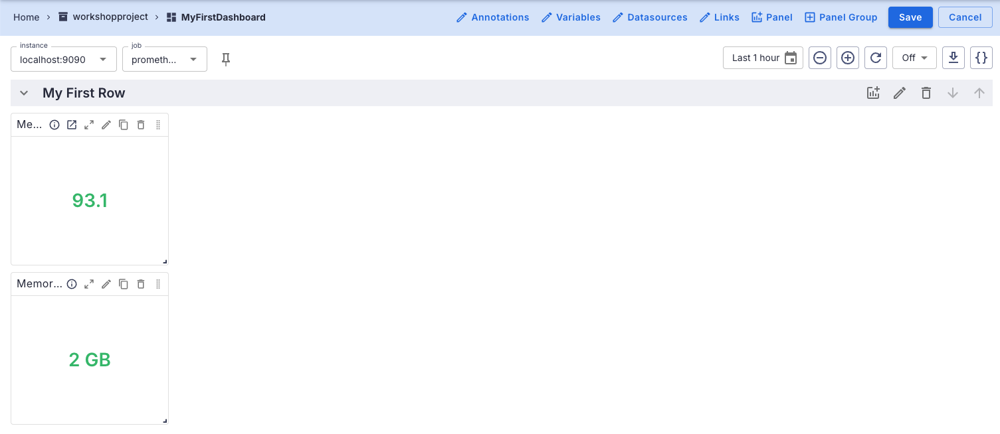
Advanced dashboard - Adding gauge details
Click on the add panel menu in the header for the group
My First Row and
start filling in the Add Panel details as shown:
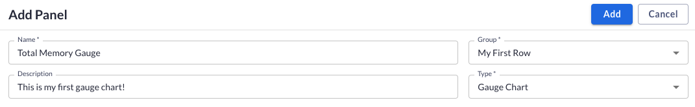
Advanced dashboard - Adding gauge query
Scroll down and in the first query field add the following PromQL query:
go_memstats_alloc_bytes_total{instance='$instance', job='$job'}
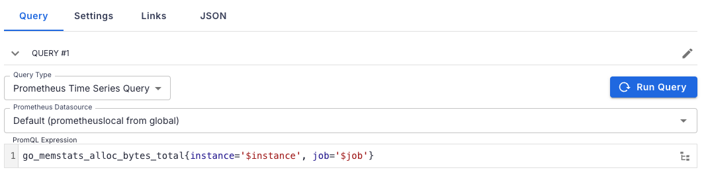
Advanced dashboard - Previewing gauge query
Click on
RUN QUERY button and notice the preview is a graph of the total
memory used but the colors do not show green to yellow to red as we would like, so click on the
tab SETTINGS under the graph:
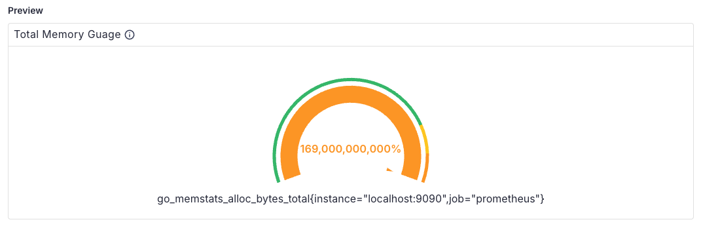
Advanced dashboard - Adjusting gauge settings
Adjust the settings for this gauge chart as shown to adjust the Unit,
decimals, and as shown on the right image, click on the color dot to select red instead of
orange:
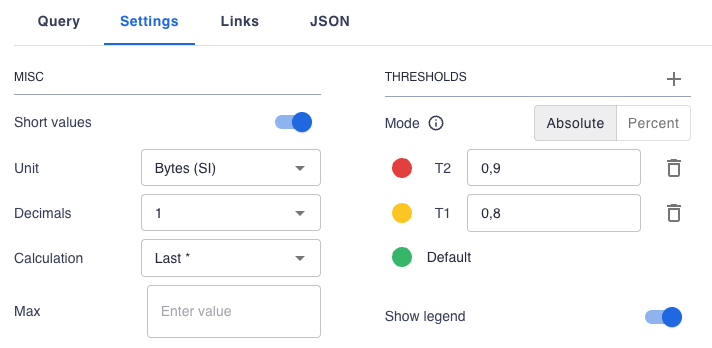
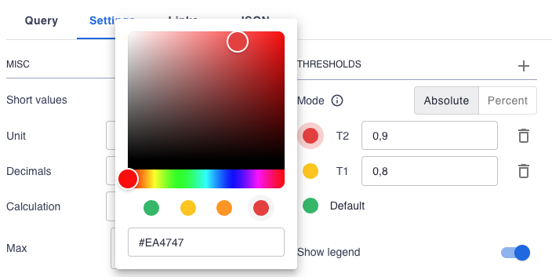
Advanced dashboard - Adding the new gauge
To apply all the changes to this new panel and add it to the existing dashboard group, click
on the
ADD button at the top. This results in a weird layout:
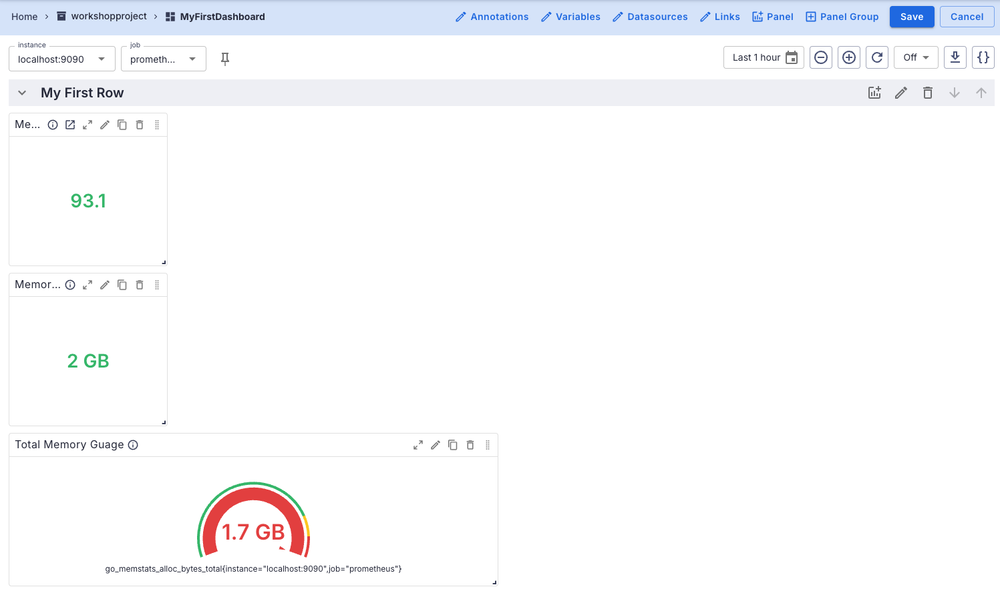
Advanced dashboard - Adjusting memory total location
Now resize the panel and move to the location as shown here:
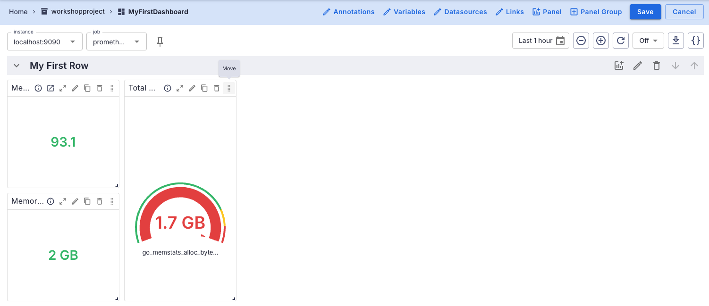
Advanced dashboard - Finalizing the changes made
To finalize you can resize all panels for uniformity, arrange them as shown, and save the
changes using the
SAVE button:
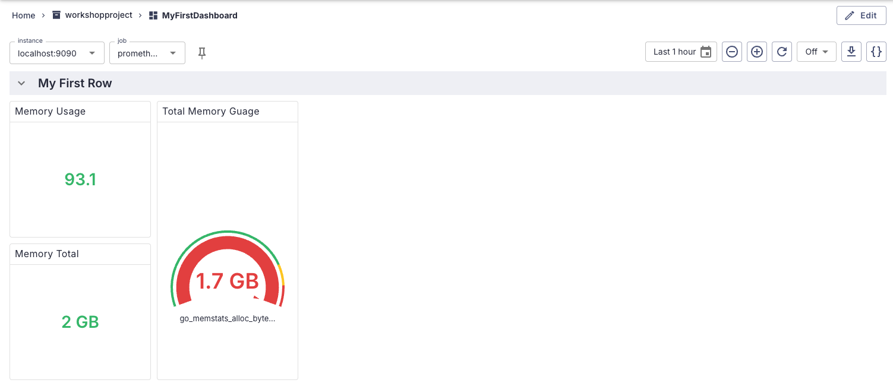
Advanced dashboard - Creating memory usage gauge
Now add one more panel of the type
Gauge Chart to show a memory usage gauge,
and it should eventually look something like this:
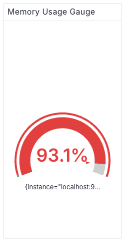
Advanced dashboard - Designing on your own
You've now created a few panels on your own, so let's see if you can do this one solo with
just a design description:
EDIT- open dashboard for editingADD- add panel toMy First Rowopening the panel editorNAME- name the panelMemory Usage GaugeDESCRIPTION- "This is my second gauge chart!"TYPE- selectGauge Chart
Advanced dashboard - Designing the query
Now head on down to the query section and add in the PromQL query as follows:
100 - ((go_memstats_sys_bytes{instance='$instance', job='$job'} * 100) /
(go_memstats_alloc_bytes_total{instance='$instance', job='$job'}))
Advanced dashboard - Designing the settings
After the query you need to polish up the preview so that the panel makes more sense, so adjust
the settings:
UNIT- set unit to measure a percentage from 0-100DECIMALS- make sure the percentage measures to one decimal pointCOLOR- make sure the range from 0.9 onwards is using the color RED
Advanced dashboard - Final results, well done!
To finalize you can resize all panels for uniformity, arrange them as shown, and save the
changes using the
SAVE button:
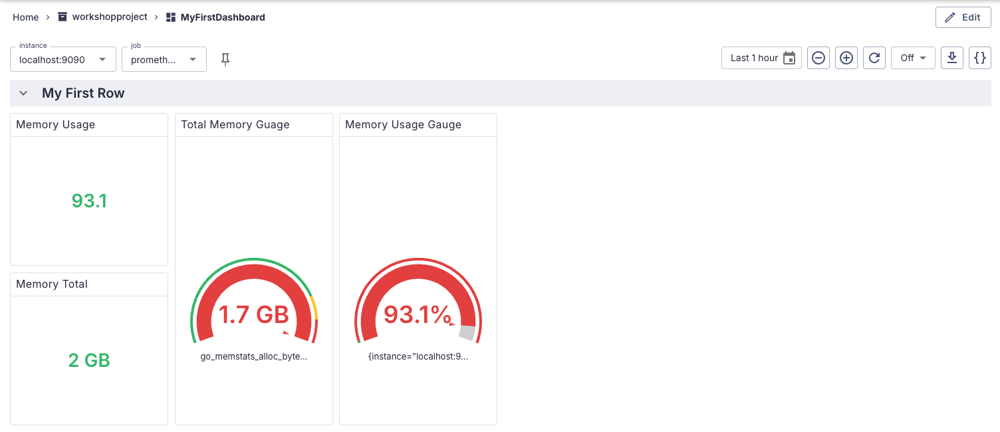
Advanced dashboard - Fixing decimal to percentage
Notice how the stat chart
Memory Usage is a decimal number and not a
percentage? Fix that by editing the panel and adjusting the settings to percentage between 1-100
and to one decimal point. Your dashboard should look like this when done:
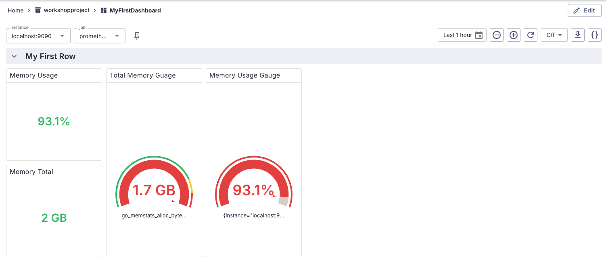
Advanced dashboard - Adding a new row
Time to add another row to your dashboard, where you'll be putting several
Time Series Charts. Add a new Panel Group by editing
the dashboard, adding a new panel group, and also renaming your first row as shown (don't forget
to save the results):
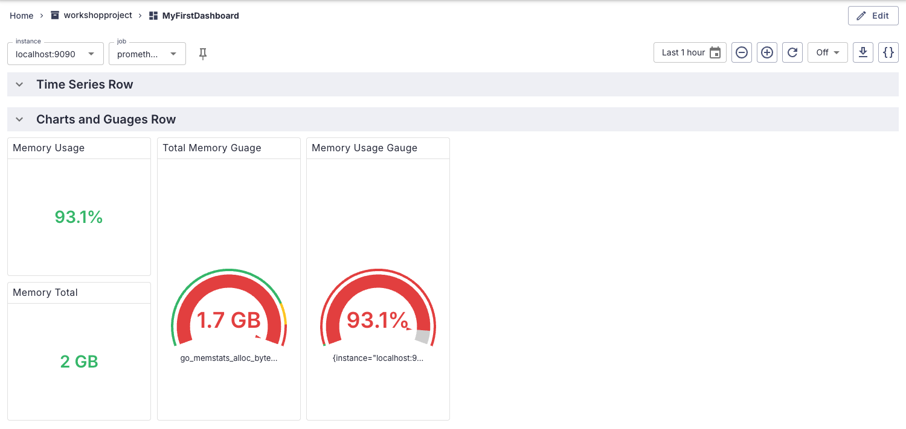
Advanced dashboard - New memory line chart
Let's add your first
Line Chart to the new row you just created. You'll be charting
memory totals across various aspects of your systems, and it will end up looking like this:
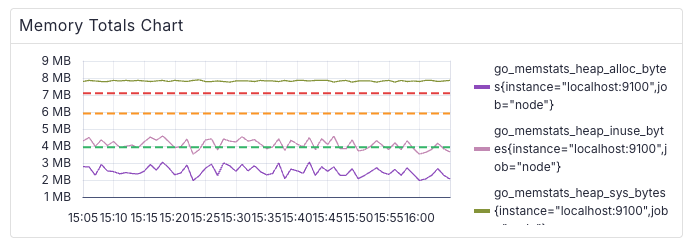
Advanced dashboard - Adding memory chart details
To add a new panel as before, start by opening the dashboard for editing with
EDIT button in top right and click on add panel icon in the header for the
group Time Series Row to open the Edit Panel pop-up and
add details as shown:
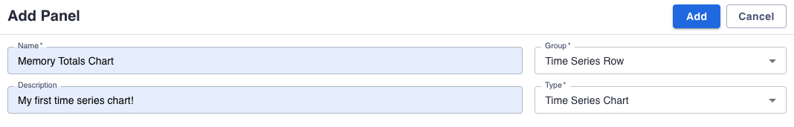
Advanced dashboard - Adding chart queries
Scroll down to the
QUERY tab and add three different PromQL queries to
collect three data sets to represent memory totals for your line chart:
QUERY 1 - go_memstats_heap_alloc_bytes{instance='$instance', job='$job'}
QUERY 2 - go_memstats_heap_inuse_bytes{instance='$instance', job='$job'}
QUERY 3 - go_memstats_heap_sys_bytes{instance='$instance', job='$job'}
Advanced dashboard - Adjusting chart settings
Notice the preview consists of several lines in the chart representing different memory
conditions. It would be nice to have thresholds outlined in the chart to give an idea as to the
status of the lines, so click on the tab
GENERAL SETTINGS under the graph
and update settings as shown:
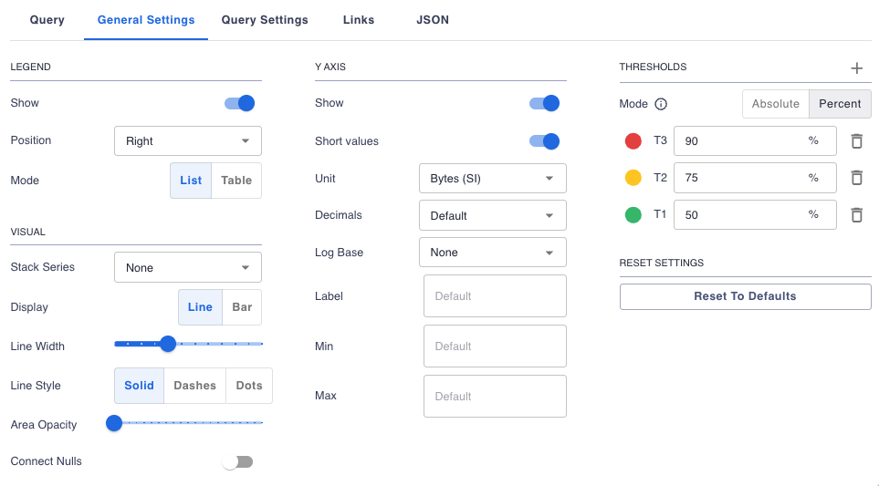
Advanced dashboard - Previewing line chart
Preview the line chart and make sure you like what you see, the memory data tracking and the
three status thresholds, noting that the legend is on the right:
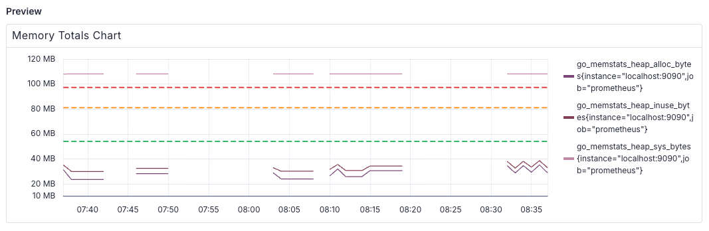
Advanced dashboard - Adjusting memory line chart
To apply all the changes to this new panel and add it to the existing dashboard group, click
on the
ADD button at the top. Adjust the panel size until it displays as
shown:
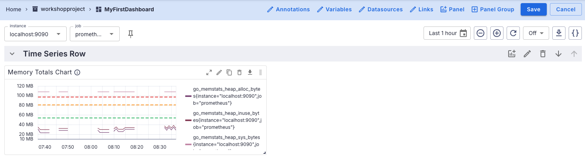
Advanced dashboard - Finalizing the dashboard
Now save the dashboard and your finalized new memory total line chart should look like this:
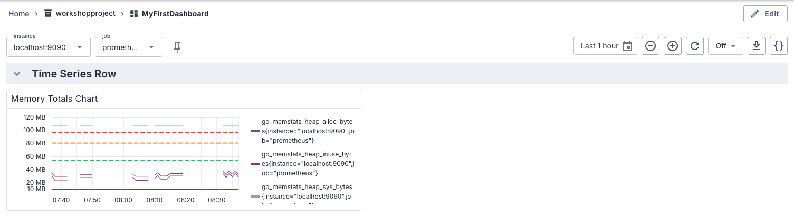
Advanced dashboard - Changing instance and job
Next you will be adding a new line chart showing the load across a few of the nodes running in
your infrastructure. To query these nodes, you'll need to ensure you are selecting the correct
instance value
localhost:9100 and the correct job value
node. Using the drop-down menus, set as shown below (if not done already):
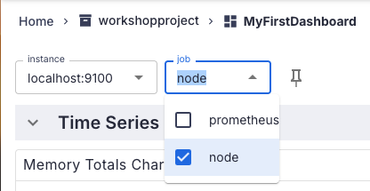
Advanced dashboard - New load line chart
Now you're ready to add another
Line Chart visualizing load across several
nodes. When you are done, it's going to look like this:
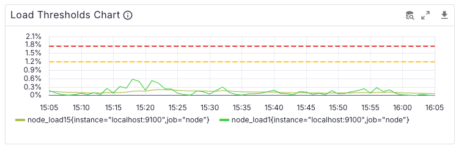
Advanced dashboard - Adding load chart details
To add a new panel as before, start by opening the dashboard for editing with
EDIT button in top right and click on add panel icon in the header for the
group Time Series Row to open the Edit Panel pop-up and
add details as shown:
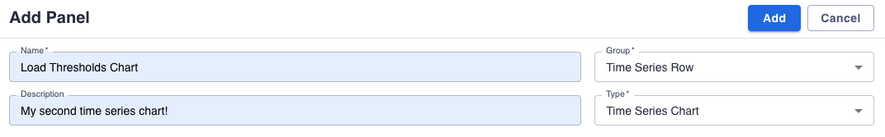
Advanced dashboard - Adding load chart queries
Scroll down to the
QUERY tab and add two different PromQL queries to
collect the node load data being represented in the load line chart:
QUERY 1 - node_load15{instance='$instance',job='node'}
QUERY 2 - node_load1{instance='$instance',job='node'}
Advanced dashboard - Adjusting chart settings
Notice the preview consists of several lines in the chart representing different load
conditions. It would be nice to have thresholds outlined in the chart to give an idea as to the
status of the lines, so click on the tab
GENERAL SETTINGS under the graph and update
settings as shown:
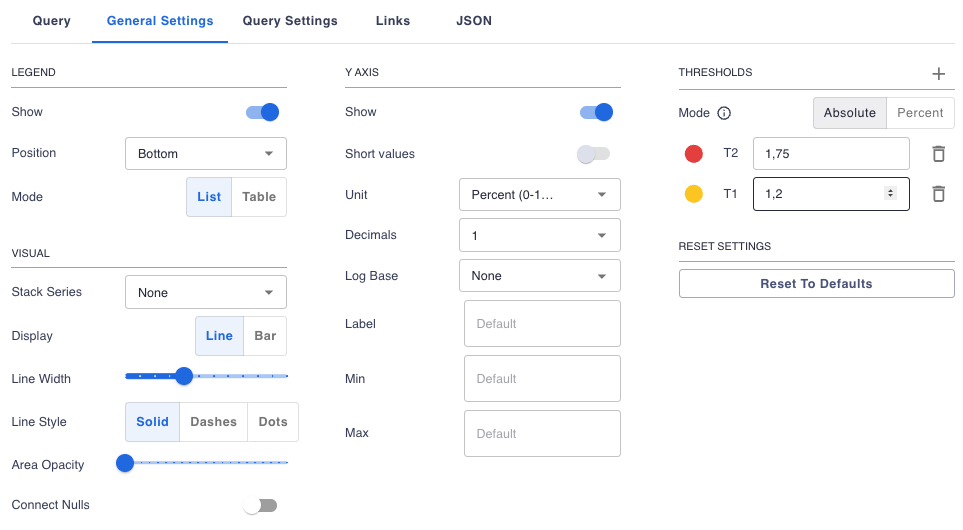
Advanced dashboard - Previewing line chart
Preview the line chart and make sure you like what you see, the node tracking and the load
thresholds. Note that you can hover over lines in the chart and see the data legend. At this
time you can't name the thresholds:
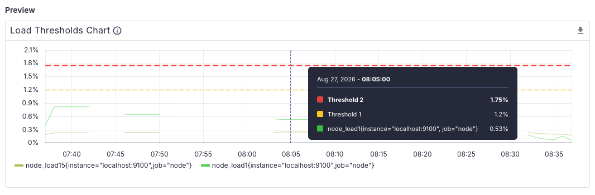
Advanced dashboard - Adjusting memory line chart
To apply all the changes to this new panel and add it to the existing dashboard group, click
on the
ADD button at the top. Move and adjust the panel size until it
displays as shown:
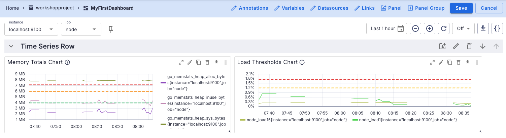
Advanced dashboard - Saving variable changes
When you now save the dashboard you get a pop-up asking how to handle the detected variable
changes. Let's make those changes stick so that everytime we return to this dashboard they are
automatically selected by checking that box on the option and
SAVE CHANGES
button:
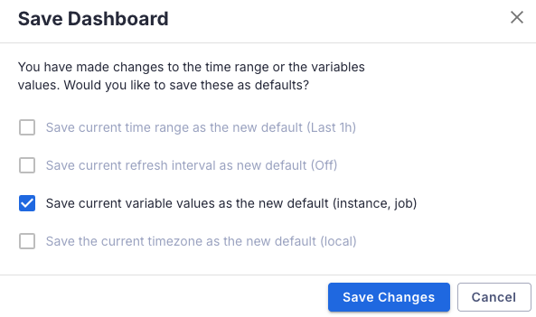
Advanced dashboard - Finalizing the dashboard
The finalized dashboard with the load threshold line chart should look like this:
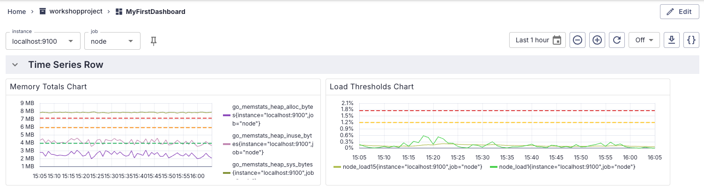
Lab completed - Results

Next up, creating an advanced++ dashboard...

Contact - are there any questions?
Eric D. Schabell
Director Evangelism
Contact: @ericschabell {@fosstodon.org) or https://www.schabell.org
Director Evangelism
Contact: @ericschabell {@fosstodon.org) or https://www.schabell.org